Estrellas de neutrones y púlsares: los faros del cementerio estelar
Qué queda cuando muere una estrella de alta masa: una esfera de neutrones del tamaño de Santiago con la masa de dos soles. Cómo se forma en el colapso del núcleo de hierro, cómo Jocelyn Bell la descubrió en una señal de radio que parecía alienígena, y por qué los púlsares son los relojes más precisos —y los laboratorios más extremos— del universo.
La clase anterior cerró con la muerte de las estrellas: las de baja masa dejan una enana blanca (que en un sistema binario puede acretar masa y explotar como supernova tipo Ia). Esta clase visita el primer remanente de las estrellas de alta masa: la estrella de neutrones. Es el antiguo núcleo de hierro de una estrella masiva, comprimido hasta densidades de núcleo atómico y sostenido por la presión degenerada de neutrones. Cuando ese objeto gira rápido y su campo magnético dispara haces de partículas y radiación desde los polos, lo vemos como un púlsar: un faro cósmico cuyos pulsos, de regularidad de reloj atómico, permiten desde detectar planetas hasta inferir ondas gravitacionales.
El cementerio estelar (repaso)
Dónde estamos parados en el módulo: remanentes según la masa de la progenitora.
Un remanente estelar es lo que queda de una estrella cuando ya no puede generar energía fusionando elementos livianos en más pesados. El repaso al inicio de la clase fijó el mapa:
- Estrellas de baja masa (tipo Sol): terminan como enanas blancas — el núcleo expuesto de carbono y oxígeno, del tamaño de la Tierra, sostenido por presión degenerada de electrones. En un sistema binario pueden acretar material de una compañera, superar el límite de Chandrasekhar y explotar como supernova tipo Ia.
- Estrellas de alta masa (≳ 8 M☉): su núcleo llega hasta el hierro, el último elemento que la fusión puede producir liberando energía. Ese núcleo colapsa y deja una estrella de neutrones (esta clase) o, si hay demasiada masa cayendo, un agujero negro (próxima clase).
La profesora anunció que dictaría las dos clases finales de estrellas el mismo día (la clase 5, de agujeros negros, va después del break), y recordó la actividad práctica con el radiotelescopio del viernes siguiente — que calza perfecto con esta clase: los púlsares se descubrieron y se estudian principalmente en ondas de radio.
Ante una pregunta, la profesora comentó que no existen estrellas de 300 M☉: el límite (debatible) estaría entre ~200 y 250 M☉. Si la estrella es más masiva, su propia presión de radiación la desarma mientras intenta formarse.
Qué es una estrella de neutrones
Un sol comprimido al tamaño de Santiago, sostenido por mecánica cuántica.
Así como la enana blanca es el núcleo expuesto de una estrella de baja masa (carbono y oxígeno), la estrella de neutrones nace del núcleo de hierro de una estrella de alta masa. Pero ese núcleo no queda tal cual: durante el colapso final se transforma en una esfera de neutrones. Sus números son difíciles de creer:
- Radio: ~10 km (diámetro ~20 km). Cabe dentro de la ciudad de Santiago.
- Masa: desde el límite de Chandrasekhar (1.4 M☉, el mínimo para que el núcleo colapse) hasta un límite superior aún debatido de ~3 M☉; el promedio observado ronda las 2 M☉.
- Densidad: 1013–1015 g/cm³ — comparable a la densidad de un núcleo atómico. Una cucharadita pesa como una montaña.
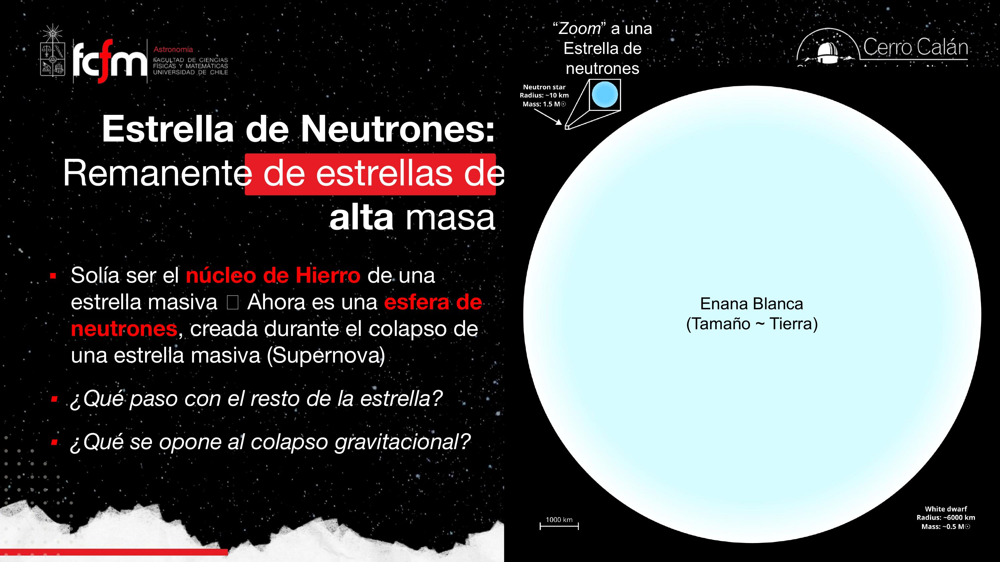
Un «núcleo atómico» de 20 kilómetros
Si quisiéramos describirla como un elemento de la tabla periódica, tendría número atómico : es como un núcleo atómico gigantesco, hecho de neutrones ordenados con protones y electrones sueltos moviéndose alrededor. La diferencia clave: un núcleo atómico está ligado por la fuerza nuclear fuerte; la estrella de neutrones está ligada por la gravedad.
En la enana blanca, los electrones degenerados (principio de exclusión de Pauli: cada partícula ocupa su «slot» cuántico) sostienen el objeto. Si la masa es mayor, los electrones no dan abasto: el colapso «pasa de largo», los electrones terminan expulsados hacia la superficie y son los neutrones degenerados —más masivos, capaces de ejercer más presión— los que detienen la contracción. Es el mismo mecanismo cuántico, escalado a la siguiente partícula disponible.
El interior de una estrella de neutrones no se conoce bien: son tan pequeñas que hacer astrosismología es dificilísimo, y casi todo el trabajo es teórico y computacional. Hay modelos que describen la estructura interna con fases tipo «pasta nuclear»: lasaña, ñoquis, espagueti — nombres reales de la literatura para las configuraciones que adoptaría la materia según la profundidad.
La densidad de 1015 g/cm³ es un salto de ~15 órdenes de magnitud respecto al agua. Cuando los números crecen así, la intuición lineal no sirve: conviene pensar en escala logarítmica, como al comparar 1 byte con 1 petabyte. El widget de la sección interactiva deja jugar con estas escalas.
Formación: el colapso del núcleo de hierro
Fotodesintegración + captura electrónica = sopa de neutrones. Luego, rebote y supernova.
La progenitora es una estrella de secuencia principal con masa inicial ≳ 8 M☉. Recordemos por qué el hierro es el final del camino: fusionar hierro es endotérmico — en vez de liberar energía, la consume. Sin fuente de energía central, nada sostiene el peso, y la fusión por capas alrededor del núcleo sigue agregándole masa hasta que supera el límite de Chandrasekhar (1.4 M☉). Entonces el núcleo colapsa. La secuencia completa:
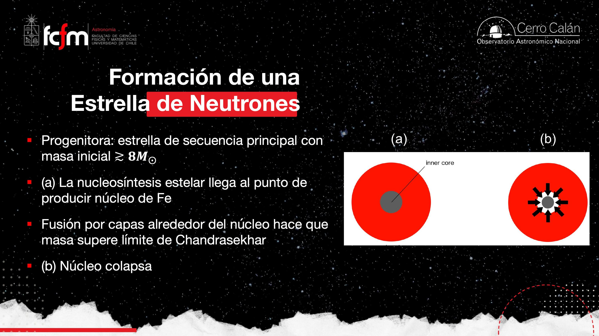
- Colapso: el núcleo de hierro, inerte, cae sobre sí mismo. Al comprimirse, la temperatura se dispara hasta ~10⁹ K.
- Fotodesintegración: a esas temperaturas, los fotones son tan energéticos que al ser absorbidos por un núcleo atómico lo disocian en elementos más ligeros — por ejemplo, un núcleo de hierro se rompe en núcleos de helio y neutrones libres. Los núcleos de helio resultantes vuelven a chocar con fotones y siguen rompiéndose: efecto en cadena.
- Captura electrónica: cada protón atrapa un electrón y forma un neutrón, emitiendo un neutrino (la física de partículas «cuadra el balance» con él). Entre ambos procesos, el núcleo se convierte en una sopa de neutrones.
- Freno cuántico: cuando la densidad alcanza la de un núcleo atómico, la presión degenerada de neutrones dice «hasta aquí»: el colapso se detiene de golpe… si la masa lo permite. Si cae demasiado material, ni los neutrones aguantan y se forma un agujero negro (próxima clase).
- Rebote y supernova: el material que venía cayendo rebota contra el núcleo ya rígido. Esa onda de choque, más el enorme flujo de neutrinos producido en la captura electrónica, expulsa las capas externas: es la supernova de colapso de núcleo (tipo II) — nada que ver con la Ia de las enanas blancas. Lo que queda en el centro es la estrella de neutrones.
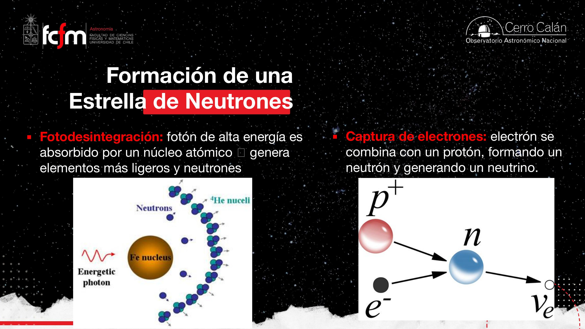
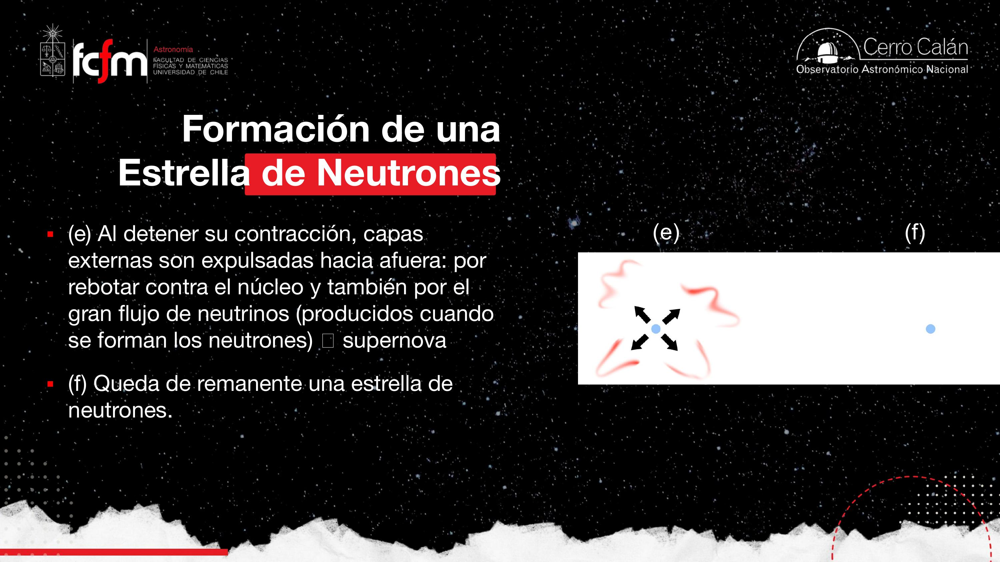
El colapso es un sistema con retroalimentación positiva (comprimir sube temperatura, que acelera los procesos que quitan soporte) que se detiene solo cuando aparece una restricción dura: la degeneración de neutrones, que actúa como un límite físico tipo hard stop. El «rebote» es la respuesta impulsiva del sistema al chocar contra esa restricción — como un tren de datos que colisiona contra un buffer lleno y genera backpressure hacia arriba.
Descubrimiento: Jocelyn Bell y la señal CP1919
De «Little Green Men» a púlsares: señal, ruido e interferencia en radioastronomía.
En 1967, Jocelyn Bell Burnell, estudiante de doctorado con su supervisor Tony Hewish, trabajaba con la antena del Radio Observatorio Mullard en Cambridge, haciendo un mapeo del cielo. Encontraron una señal de radio que venía siempre de las mismas coordenadas (ascensión recta 19h 19m — de ahí el nombre CP1919) y que no aparecía apuntando a ninguna otra dirección. Era tan periódica que la bautizaron LGM: Little Green Men — ¿un mensaje alienígena en clave Morse?
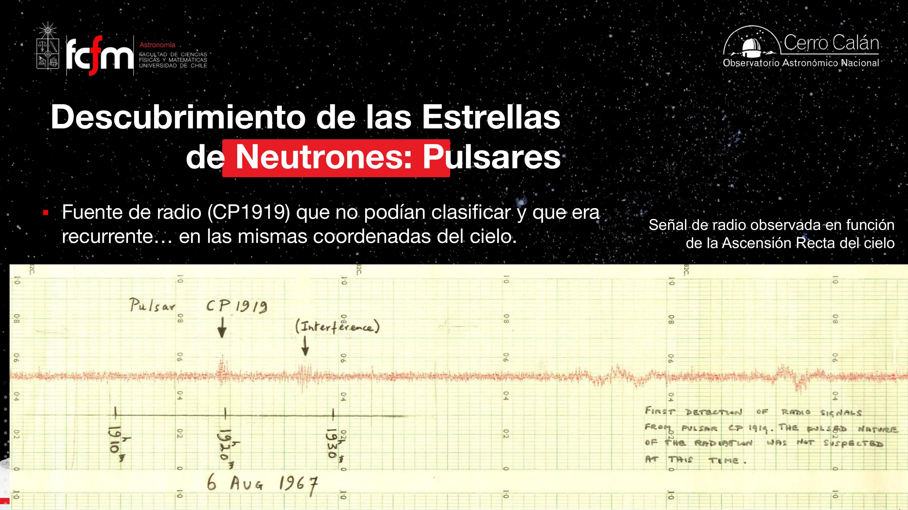
Al cambiar a un instrumento que grababa a una tasa de muestreo más rápida (mejor resolución temporal), lo que parecía un «zumbido» continuo se reveló como pulsos discretos: rápidos, intensos y extremadamente regulares, uno cada 1.337301 segundos — siempre, con todas esas cifras significativas.
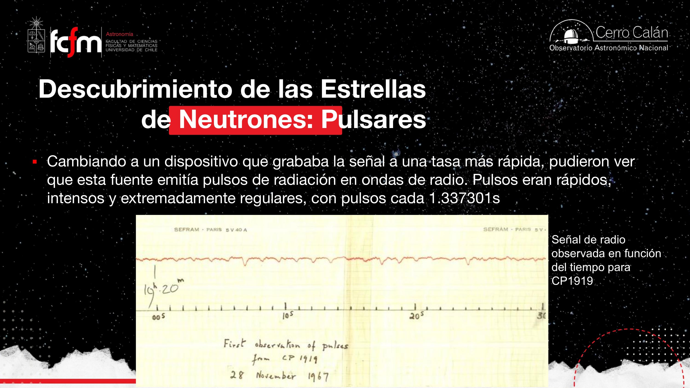
Descartaron el origen alienígena al encontrar muchas fuentes similares en direcciones muy separadas del cielo: una civilización no estaría transmitiendo desde todas partes. Nació el término pulsar (pulsating radio source; en español el plural es «púlsares»). En 1974 el trabajo recibió el Premio Nobel… solo para Hewish. Bell —quien hizo las observaciones, las mediciones y el cálculo del período— quedó fuera: una de las grandes injusticias de la astrofísica, agravada por el sesgo de género de la época.
Años después, en otro observatorio, apareció una señal misteriosa todas las noches a la misma hora (~23:53). ¿Contacto? No: era un operador calentando su café en el microondas. Moraleja de ingeniería: en radio, la interferencia humana (RFI) es omnipresente y distinguirla de la señal astronómica es parte esencial del trabajo.
El descubrimiento es un caso de libro de teorema de muestreo: con baja tasa de muestreo, un tren de pulsos de período ~1.3 s se ve como señal continua (aliasing conceptual); al subir la frecuencia de muestreo, la estructura temporal real emerge. Y la validación («¿aparece en otras direcciones?») es el equivalente a descartar un bug del instrumento antes de aceptar un resultado extraordinario.
El modelo de faro de los púlsares
Una estrella de neutrones girando, con haces de partículas y radiación saliendo de los polos magnéticos.
Las propiedades básicas observadas: períodos desde 0.001 s hasta decenas de segundos; se encuentran al centro de remanentes de supernova (nebulosas); y los pulsos ocurren también en óptico y rayos X, no solo en radio. El ejemplo estrella es el púlsar de la Nebulosa del Cangrejo, con período de 0.033 s — tan energético que en imágenes ópticas se le ve literalmente aparecer y desaparecer ~30 veces por segundo.
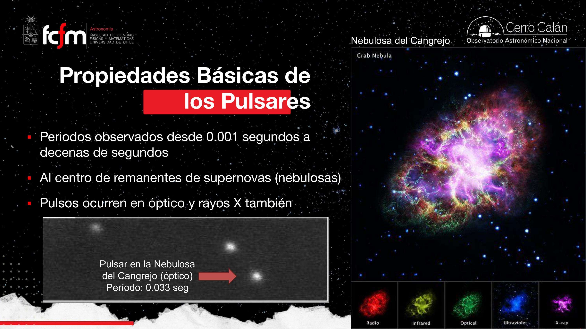
Cómo funciona el faro
Combinando teoría y observación: un púlsar es una estrella de neutrones en rotación muy rápida con campos magnéticos muy intensos. En su superficie hay electrones y protones sueltos en movimiento — es decir, corrientes eléctricas, que generan y sostienen esos campos. Las partículas cargadas quedan atrapadas por las líneas de campo, se concentran en los polos magnéticos (el único lugar por donde pueden escapar) y salen disparadas en dos haces estrechos de partículas y radiación.
La clave geométrica: los polos magnéticos no están alineados con el eje de rotación (casi nunca lo están — en la Tierra tampoco). Entonces, al girar la estrella, los haces barren el cielo como un faro costero: vemos un pulso cada vez que un haz cruza nuestra línea de visión.
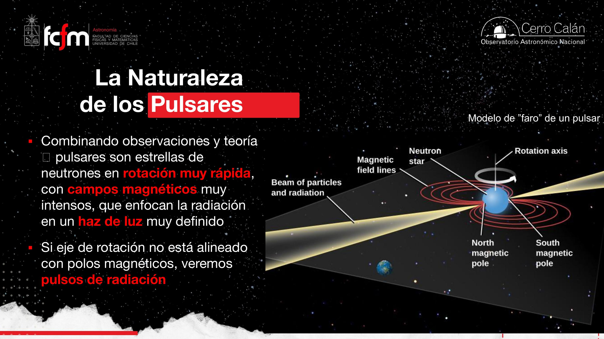
Todos los púlsares son estrellas de neutrones, pero no todas las estrellas de neutrones son púlsares. Es en parte un efecto puramente observacional: si el haz nunca apunta a la Tierra, no vemos pulsos, aunque el faro esté encendido. (Y además el faro se apaga con la edad, como veremos.)
Pregunta retórica de la diapositiva: ¿no podría ser una enana blanca girando rapidísimo? No: para producir pulsos con períodos de milisegundos a segundos, un objeto del tamaño de la Tierra tendría que girar tan rápido que se despedazaría — la velocidad requerida no es físicamente compatible con ese tamaño. Solo un objeto de ~10 km puede rotar así de rápido y mantenerse entero.
En la Tierra, partículas cargadas del espacio son atrapadas por nuestro campo magnético y canalizadas hacia los polos, donde chocan con la atmósfera y producen auroras. En el púlsar es el efecto inverso: partículas de la estrella se concentran en los polos magnéticos y escapan hacia el espacio.
Por qué giran tan rápido y son tan magnéticos
Dos leyes de conservación aplicadas a una compresión de 10⁶ km → 10 km.
Conservación del momento angular
La progenitora en secuencia principal gira lentamente, pero al colapsar el núcleo, el radio se reduce brutalmente y —como la patinadora que recoge los brazos— la rotación se acelera para conservar el momento angular:
Conservación del flujo magnético
Lo mismo pasa con el campo magnético: el flujo magnético (campo × área) se conserva. La estrella se achica de ~10⁶ km a ~10 km, el área (∝ R²) disminuye en un factor 1010, así que el campo aumenta por 1010:
Ese campo giratorio e intensísimo atrapa los protones y electrones de la superficie y los acelera a velocidades relativistas (en clase: régimen relativista ≈ sobre el 90% de la velocidad de la luz). En palabras de la profesora: el púlsar es, básicamente, un acelerador de partículas natural.
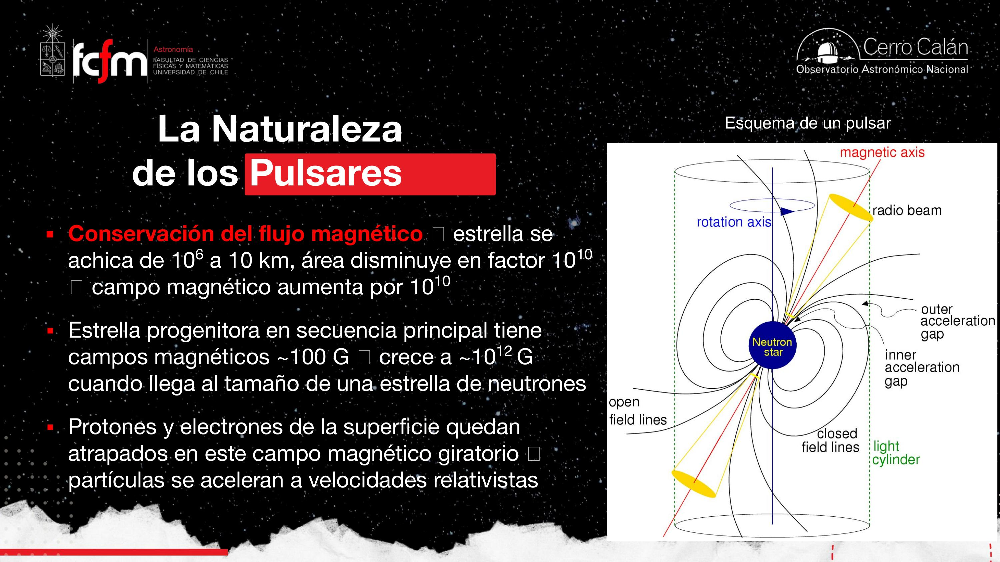
Dos invariantes (L y ΦB) más un cambio de escala de 5 órdenes de magnitud en R determinan todo el comportamiento del sistema. Es el mismo razonamiento del análisis dimensional: sin resolver ninguna ecuación diferencial, las leyes de conservación fijan que ω y B escalen como 1/R². El widget interactivo de abajo implementa exactamente estas dos relaciones.
Cómo evolucionan los púlsares y qué evidencia respalda el modelo
El faro se apaga en ~10 millones de años; el Cangrejo confirma la contabilidad energética.
El ciclo de vida
- Vida típica: ~10 millones de años. Los púlsares jóvenes giran más rápido y tienen campos más intensos; al emitir radiación y partículas pierden energía rotacional, se ralentizan y sus haces se debilitan.
- Púlsares con miles de años ya no emiten en visible ni rayos X: quedan como púlsares de radio con períodos cercanos al segundo (el Cangrejo, joven, aún pulsa en óptico y X con P = 0.033 s).
- En el diagrama campo magnético vs. período existe una «línea de muerte»: con campo débil (≲ 1011 G) y período largo, la estrella ya no puede disparar partículas — el púlsar «se extingue», aunque la estrella de neutrones sigue ahí.
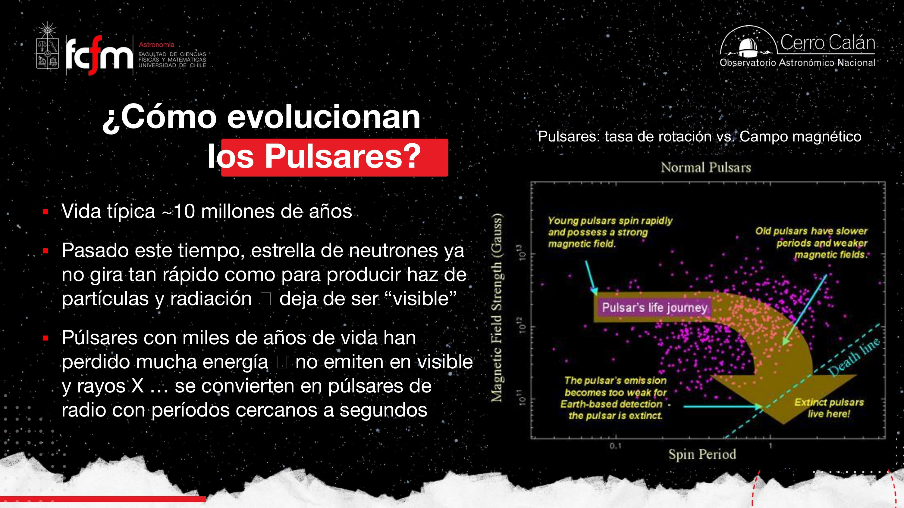
¿Por qué hay pocos púlsares dentro de remanentes de supernova?
- El gas del remanente se dispersa en el medio interestelar ~100 veces más rápido de lo que vive el púlsar: la nebulosa desaparece mucho antes de que el púlsar se apague.
- Las explosiones de supernova pueden ser asimétricas: la onda de choque puede «patear» al púlsar y lanzarlo fuera del remanente.
Evidencia del modelo
- Masas medidas de púlsares caen justo en el rango teórico de las estrellas de neutrones (1.4 – ~3 M☉).
- Las partículas cargadas del púlsar «iluminan» la nebulosa mucho después de la explosión — sin fusión nuclear activa, la fuente de energía es la rotación de la estrella de neutrones, transferida a las partículas por el campo magnético giratorio.
- El púlsar del Cangrejo se está ralentizando de forma medible, y la energía rotacional que pierde coincide exactamente con la energía que emite la nebulosa que lo rodea: la contabilidad energética cierra.
La luminosidad de la nebulosa se paga con energía cinética de rotación: . Al perder energía, ω baja (el período P sube). Medir y comparar con la luminosidad observada de la nebulosa es la prueba cuantitativa del modelo — y en el Cangrejo, coincide.
Magnetares: el otro tipo de estrella de neutrones
Campo mil veces más extremo, rotación lentísima, otra fuente de energía.
A la fecha se conocen ~3.000 púlsares. Pero hay otro tipo de estrella de neutrones, mucho más raro (~30 conocidos): los magnetares.
| Púlsar | Magnetar | |
|---|---|---|
| Rotación | Muy rápida (ms – s) | Muy lenta (1–10 s) |
| Campo magnético | ~10¹² G (intenso) | ~1000× más extremo |
| Fuente de energía | Rotación de la estrella | Decaimiento del campo magnético |
| Emisión | Pulsos (haz de faro) | Sin pulsos típicos: domina el campo |
| Conocidos | ~3.000 | ~30 |
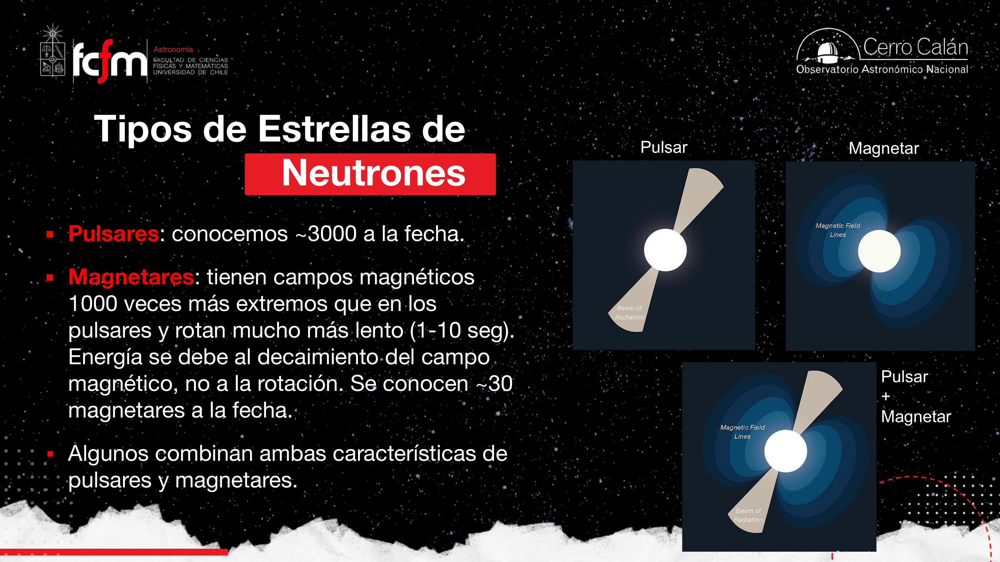
Por la polarización de la luz: los campos magnéticos cambian la orientación del plano de oscilación de la onda, y ese cambio es medible. La profesora lo conectó con los lentes de sol polarizados: si miras una pantalla a través de ellos y los giras, la luz cambia — estás midiendo polarización de forma casera.
Púlsares como relojes y laboratorios de física extrema
Cronómetros con error de 10⁻¹⁶ apuntando a la física que no podemos hacer en la Tierra.
Los púlsares son relojes atómicos naturales. El primer púlsar de milisegundos se descubrió en 1982, y su período se conoce con una decena de cifras significativas. Los períodos se pueden cronometrar con errores tan pequeños como 10−16. Además, se ha medido su desaceleración: el púlsar frena a razón de ~10−19 s por segundo, y esa tasa de frenado a su vez cambia en ~10−30 — «como pisar el freno cada vez más fuerte», en palabras de la clase, pero con cifras ridículamente pequeñas.
Esa precisión los convierte en laboratorios para investigar condiciones físicas inexistentes en la Tierra:
- Campos magnéticos y gravitacionales extremos; materia a densidad nuclear; partículas a velocidades relativistas.
- Medición de energía gravitacional perdida en púlsares binarios y de masas de estrellas de neutrones (clave para acotar el límite superior de ~3 M☉).
- Detección de perturbaciones orbitales por compañeros de baja masa — incluso planetas.
- Posiciones y movimientos propios precisos; y distorsiones del espacio-tiempo por un fondo cósmico de ondas gravitacionales.
Púlsares para inferir ondas gravitacionales
La idea es elegante: si el período de un púlsar es un metrónomo casi perfecto, cualquier retraso (time delay) en la llegada de los pulsos delata que algo pasó en el camino. Una onda gravitacional que distorsiona el espacio-tiempo hace que la luz recorra un camino «arrugado»: no es que viaje más lento, es que el trayecto efectivo cambia. Midiendo las diferencias entre período esperado y observado de muchos púlsares a la vez, aparece un patrón específico de correlaciones — como si pares de púlsares estuvieran sincronizados.
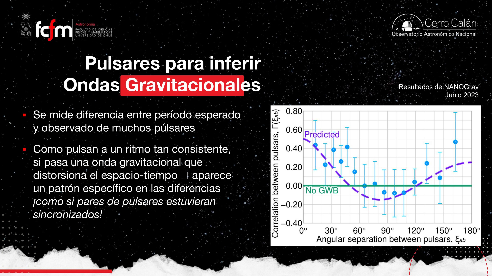
El disco de oro de las Voyager incluye un mapa de púlsares: líneas rectas cuya longitud codifica la distancia a cada púlsar, con marcas perpendiculares que indican su período en binario. Como los períodos son tan precisos y distintivos, una civilización que encuentre el disco podría triangular la posición del Sistema Solar en la galaxia. (El disco incluye además el esquema del átomo de hidrógeno como «piedra Rosetta» física.)
Un pulsar timing array es literalmente un sistema de sincronización distribuida: relojes remotos (púlsares) cuyos desfases correlacionados revelan una perturbación común del canal (el espacio-tiempo). Es la misma lógica con que NTP o los sistemas GPS detectan y corrigen latencias de red — pero el «jitter» aquí es una onda gravitacional de fondo.
Púlsares exóticos: binarios, planetas y milisegundos
Tres rarezas que produjeron un Nobel, el primer exoplaneta y los relojes más rápidos.
Púlsares binarios y relatividad general
Dos estrellas de neutrones orbitando su centro de masa. Einstein predijo (a principios del s. XX) que esas órbitas deberían «decaer»: un objeto masivo solitario curva el espacio-tiempo pero no genera ondas; dos objetos masivos en órbita compacta producen ondas gravitacionales que se propagan (a la velocidad de la luz) y se llevan energía orbital. Consecuencia: la órbita se encoge y los objetos se acercan en espiral.
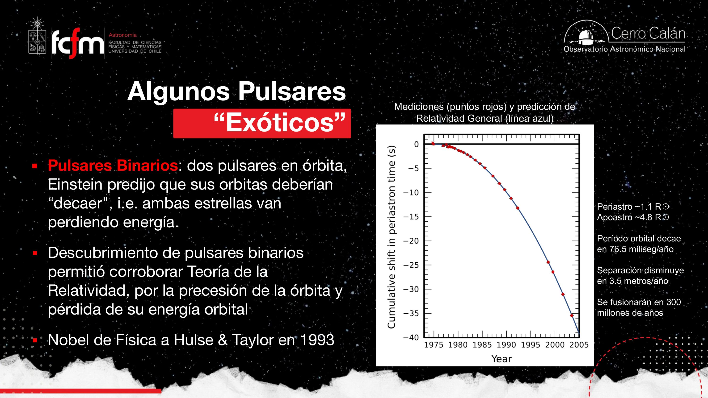
Periastro = punto de la órbita donde las estrellas están más cerca (análogo al perihelio respecto del Sol); apoastro = el más lejano. Las órbitas también precesan (como la «rosita» que dibuja la órbita de Mercurio), otro efecto relativista confirmado con púlsares binarios.
La clase mencionó que el proyecto LIGO (EE.UU.) busca fusiones de binarias de agujeros negros y estrellas de neutrones, y que la primera confirmación directa de ondas gravitacionales llegó «en el 2016 o 2017, si no me equivoco». Precisión (material externo): la primera detección, GW150914, fue en septiembre de 2015 y se anunció en febrero de 2016; la primera fusión de estrellas de neutrones observada (GW170817) fue en 2017. Un siglo después de la predicción de Einstein (1915).
Planetas alrededor de púlsares
El primer sistema de planetas extrasolares de la historia se descubrió en 1992… alrededor de un púlsar (PSR B1257+12, observado con el radiotelescopio de Arecibo a 430 MHz): tres cuerpos con masas de ~3 MTierra, ~1 MTierra y ~1 MLuna. ¿Cómo se detectan masas tan pequeñas? Por los retrasos en los pulsos: cualquier cosa que orbite al púlsar lo hace bambolearse alrededor del centro de masa, y ese bamboleo perturba —de forma periódica y medible— el tiempo de llegada de cada pulso.
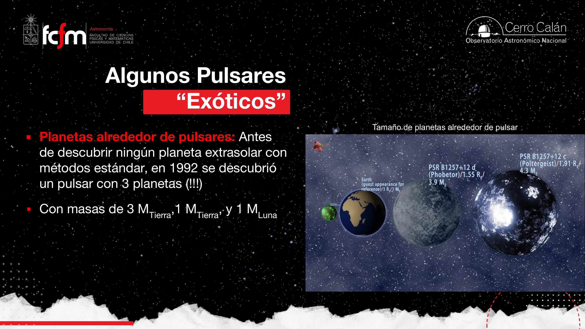
El Nobel de exoplanetas (2019) fue para Michel Mayor y Didier Queloz por 51 Pegasi b (1995), el primer planeta alrededor de una estrella tipo Sol — más relevante para la búsqueda de vida que los planetas de púlsares, que orbitan un remanente estelar. Uno de los planetas del púlsar se llama, apropiadamente, Poltergeist. Y sobre Arecibo: el icónico radiotelescopio de 300 m en Puerto Rico —el mismo del mensaje de Arecibo— colapsó en 2020, una gran pérdida para la radioastronomía.
Púlsares de milisegundos: púlsares «reciclados»
- Sistema binario: una estrella muy masiva + una de baja masa.
- La masiva evoluciona primero (vive menos), explota y deja un púlsar, que con el tiempo pierde velocidad y se enfría — el faro se va apagando.
- Eventualmente la compañera de baja masa evoluciona a gigante roja. La estrella de neutrones acreta material de ella, formando un disco de acreción — igual que la enana blanca de la clase pasada — y ese material le transfiere momento angular: la rotación se acelera.
- Cuando la acreción termina, la estrella de neutrones quedó «reciclada»: un púlsar de milisegundos, girando cientos de veces por segundo.
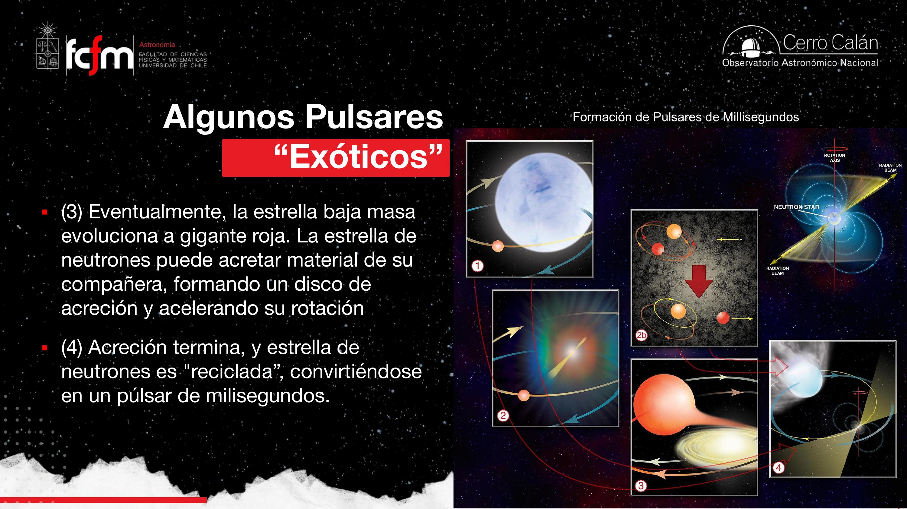
Curiosidad final: el cielo desde una estrella de neutrones
Relatividad general aplicada al paisaje.
Un experimento mental de cierre. La gravedad de una estrella de neutrones no es tan extrema como la de un agujero negro, pero se le acerca — y el espacio-tiempo a su alrededor está fuertemente curvado. Si pudiéramos pararnos en su superficie:
- El cielo sería una gran mancha: con la estrella dando una vuelta por segundo (o más rápido), las estrellas no se verían como puntos sino como trazos borrosos barriendo el cielo.
- Veríamos objetos bajo el horizonte: la luz sí escapa de una estrella de neutrones (a diferencia del agujero negro), pero viaja por un espacio curvado — los rayos se doblan y traen imágenes de lo que geométricamente está «detrás» del horizonte.
- Desde el ecuador se verían ambos polos celestes sobre el horizonte, por el mismo efecto de curvatura.
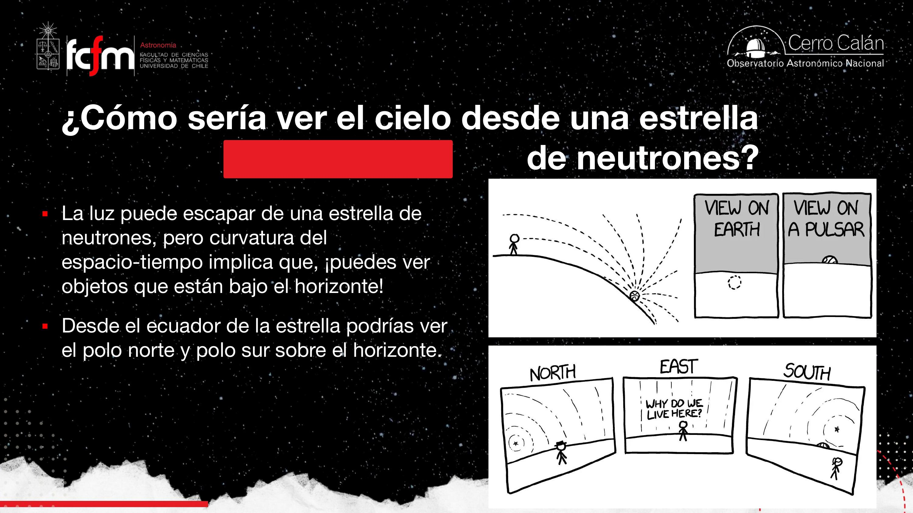
Explorar conceptos
Tres widgets para jugar con las ideas de la clase.
Conceptos clave
Tabla de repaso rápido.
| Concepto | Qué es / valor | Por qué importa |
|---|---|---|
| Estrella de neutrones | Remanente del colapso del núcleo de Fe de una estrella ≳8 M☉; R ~10 km, M entre 1.4 y ~3 M☉ | El remanente compacto «intermedio» entre enana blanca y agujero negro |
| Presión degenerada de neutrones | Presión cuántica (Pauli) ejercida por neutrones | Detiene el colapso cuando los electrones ya no pueden; fija el tamaño del objeto |
| Densidad | 10¹³–10¹⁵ g/cm³ (≈ densidad de núcleo atómico) | Una cucharadita pesa miles de millones de toneladas; A ~10⁵⁷ si fuera un «elemento» |
| Fotodesintegración | Fotones de alta energía (T ~10⁹ K) rompen núcleos de Fe en He y neutrones | Primer proceso que convierte el núcleo en sopa de neutrones |
| Captura electrónica | p⁺ + e⁻ → n + νe | Segundo proceso; el flujo de neutrinos ayuda a expulsar las capas (supernova) |
| Supernova de colapso | Rebote contra el núcleo rígido + flujo de neutrinos | Distinta de la tipo Ia (acreción sobre enana blanca) |
| Púlsar | Estrella de neutrones en rotación rápida cuyo haz cruza nuestra línea de visión; P de 0.001 s a decenas de s | Todos los púlsares son estrellas de neutrones; no al revés (efecto observacional) |
| Modelo de faro | Haces de partículas y radiación desde los polos magnéticos, desalineados del eje de rotación | Explica los pulsos: vemos un destello por cada barrido del haz |
| Conservación del momento angular | ω ∝ 1/R²: colapsar de 10⁶ a 10 km acelera el giro a milisegundos | Por qué giran tan rápido (y por qué no puede ser una enana blanca) |
| Conservación del flujo magnético | B ∝ 1/R²: de ~100 G a ~10¹² G | Por qué el campo es tan brutal; el púlsar como acelerador de partículas |
| Evolución del púlsar | Vida ~10⁷ años; se ralentiza al radiar energía rotacional; «death line» | Explica por qué hay pocos púlsares en remanentes (el gas se dispersa 100× más rápido) |
| Magnetar | Estrella de neutrones con campo ~1000× mayor y rotación lenta (1–10 s); energía del decaimiento del campo | ~30 conocidos vs. ~3.000 púlsares; algunos híbridos existen |
| Precisión de púlsares | Errores de cronometraje hasta 10⁻¹⁶; CP1919: P = 1.337301 s | Relojes cósmicos: mapa del Voyager, timing arrays, tests de relatividad |
| Púlsar binario (Hulse-Taylor) | Órbita decae 76.5 ms/año; separación −3.5 m/año; fusión en ~300 Myr | Confirmó la pérdida de energía por ondas gravitacionales (Nobel 1993) |
| NANOGrav / timing arrays | Correlaciones entre retrasos de muchos púlsares (2023) | Inferencia de un fondo cósmico de ondas gravitacionales |
| Planetas de púlsar | PSR B1257+12 (1992): 3 planetas de 3 M⊕, 1 M⊕ y 1 MLuna | Los primeros planetas extrasolares de la historia, hallados por retrasos de pulsos |
| Púlsar de milisegundos | Púlsar viejo «reciclado» por acreción desde una compañera gigante roja | El disco de acreción transfiere momento angular y lo reacelera |
Exámenes de práctica
10 exámenes de 5 preguntas (3 de alternativas autocorregibles + 2 de respuesta escrita).
- Examen 01Qué es una estrella de neutrones
- Examen 02Formación y colapso del Fe
- Examen 03Descubrimiento: Bell y CP1919
- Examen 04Modelo de faro
- Examen 05Momento angular y flujo magnético
- Examen 06Evolución y evidencia
- Examen 07Magnetares y precisión
- Examen 08Binarios y ondas gravitacionales
- Examen 09Planetas y milisegundos
- Examen 10Integrador